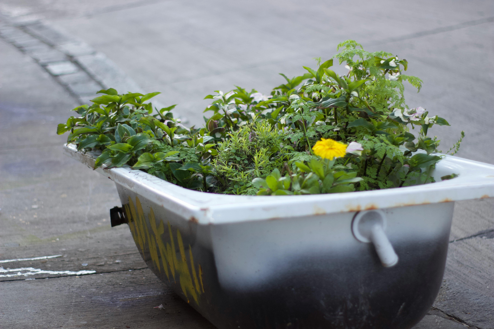

Our Blog

How Technology has affected our Daily Life and Business
About Technology in Urban Gardening
Introduction
Cities today are mostly filled with concrete and tall buildings, but technology is helping people bring nature back into their daily lives in simple and meaningful ways.People are turning rooftops, balconies, and even small backyards into lively gardens that not only help reduce their carbon footprint but also make the city feel greener and more beautiful.Urban gardening is becoming part of a growing movement where cities are adding more green spaces, people are choosing fresh, locally grown food, and there’s a stronger connection between people and the places they live.
Positive and Negative Impacts of Technology
| Positive Impacts | Negative Impacts |
|---|---|
| Makes gardening easier | Can be expensive to set up |
| Helps plants grow faster and healthier | Less natural |
| Makes cities greener and more sustainable | High initial investment |
| Water efficiency | Dependence on electricity |
| Easy for beginners | Maintenance issues |
Sustainable Living Tips & Tricks.
For sustainable living in urban place we need to use our home space Properly like balconies,rooftops because they have limited space.We can use our own kitchen to make compost for plants.
Using old conatiner of jar,tray and bukects can be used to plant vegatables.Also we can use rain water and reuse household water for irigation.
Interviews with Sustainable Brands & Experts
We have found that many sustainability brands share a common goal which is to protext the environment and promote responsible living.
Most of interview topic include use of eco-friendly and recyled materials.Also they aware people about environmental issues.
News & Updates on Environmental Issues
As per media climate change have cause impact around globe which cause rising temperatures,Melting glaciers and sea level rising.
Due to deforestion and pollution many peoples health and lifes are being affected.Plastic are causing land and water pollution.

Community Stories & Successes
Here are some inspiring stories and successes from the community.
- Communities are growing fresh vegetables to share locally.
- Awareness Program to reduce plastic use in neighborhoods.
- Volunteers are cleaning parks, rivers, and streets to promote sustainability.
- Residents are recyling goods and using own made compost.